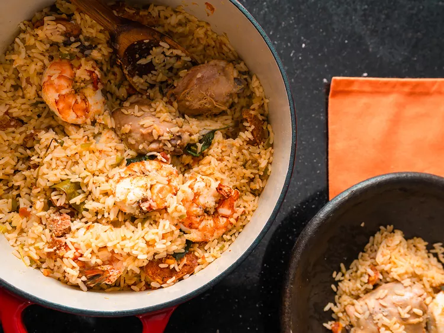

Home
Jollof Rice

Description
This bold-flavored jollof rice, my version of the dish served all over West Africa, will go well with any spicy chicken, meat, or fish.
Ingredients
Blended Sauce:
- 2 red bell peppers, seeded and cut into chunks
- 2 tomatoes, cut into chunks
- 1 habanero pepper, seeded
- 1 clove garlic
- 1/4 cup chicken stock
Rice:
- ¼ cup vegetable oil
- 1 small yellow onion, diced
- 3 tablespoons tomato paste
- 1 ½ cups parboiled rice
- 3 cups chicken stock, or more as needed
- 2 teaspoons curry powder
- 1 teaspoon dried thyme
- 1 teaspoon ground white pepper
- 2 bay leaves
- salt to taste
- 1 cup mixed vegetables
- 3 ½ tablespoons salted butter
Directions:
- Place bell peppers, tomatoes, habanero pepper, garlic, and 1/4 cup stock in a blender or food processor; blend until smooth. The consistency will be similar to a thick marinara sauce. Set aside.
- In a large pot, heat oil over medium heat. Add diced onion and fry until onion is soft and translucent, about 5 minutes.
- Add tomato paste and cook for about 5 minutes, stirring constantly. Add rice and cook for about 5 minutes.
- Stir in blended sauce mix, 3 cups stock, curry powder, thyme, white pepper, and bay leaves; season to taste with salt. Stir well and bring the pot to a boil.
- Turn the heat down to low, cover the pot and cook until rice has absorbed all the liquid, adding more stock if needed to soften the rice, about 10 minutes.
- Stir in mixed vegetables and butter. Cover, and let cook for 5 minutes. Turn heat off, allow the steam to finish cooking vegetables, about 5 minutes more. Stir before serving.
Home